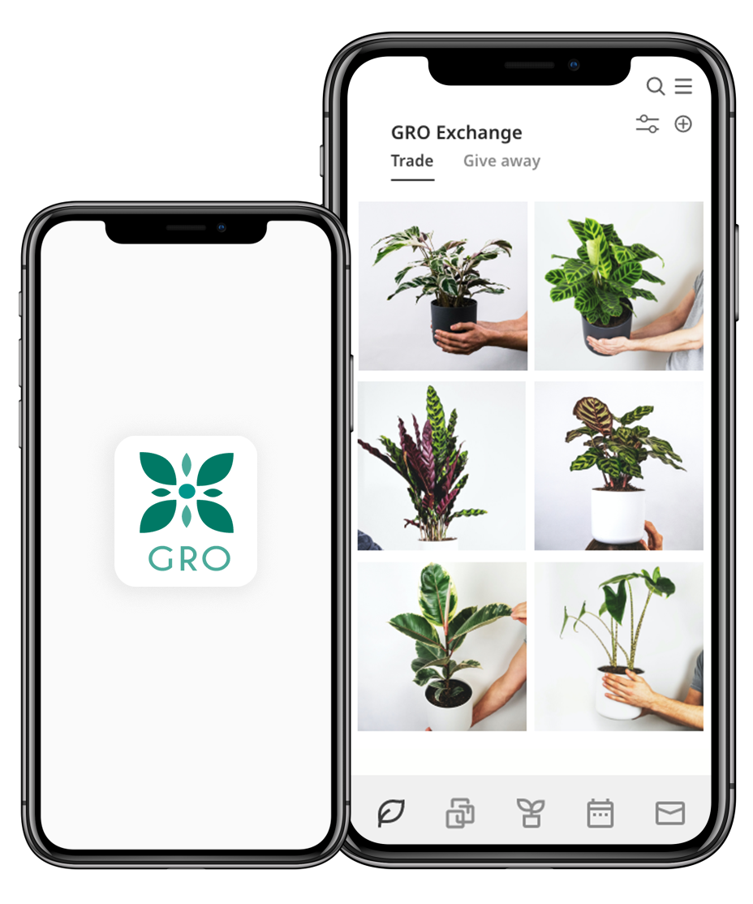

Introducing GRO
GRO is an IOS application centered around building a green community that shares the same passion for plants.
Learn about GROGRO is an IOS application centered around building a green community that shares the same passion for plants.
Learn about GROGRO connects plant lovers who are interested in being a part of the green community as well as sharing their plants and resources.
GRO allows users to connect, trade or donate plants, seeds, and garden resources with ease.
Upload pictures of your plants and create time-lapse videos that help show the progress of plants over time.
The GRO community is a supportive enviornemnt that fosters growth and interchange of knowledge for plants.
Inspired by a community-centric vision, the app allows urban plant lovers to come together and share plants, seeds, cuttings, and transplant from their own garden. They can keep track of their plants’ growth by uploading images that automate them into a time-lapse video. Growth gallery serves as an inspiration page for users to see other users’ plant growth, and discover plant-related events in their area.